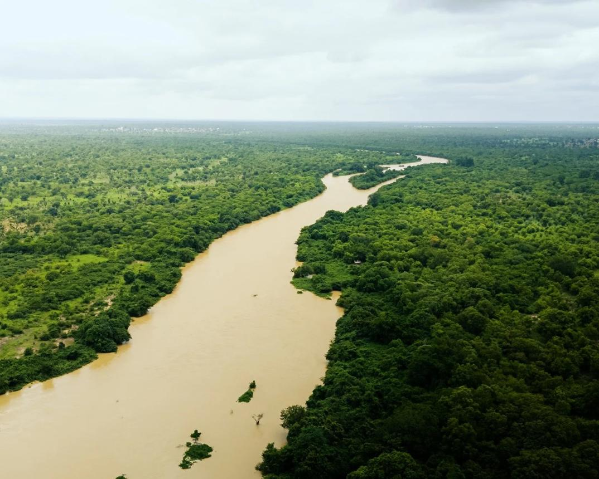

Polluted Rivers: Clean, freshwater systems vital to functioning savanna ecosystems
1. Climate-Resilient Landscapes & Natural Resources
Advancing research and nature-based solutions for climate adaptation, biodiversity conservation, sustainable water management and the restoration of savanna landscapes, wetlands and river basins.
Explore climate & landscapes →